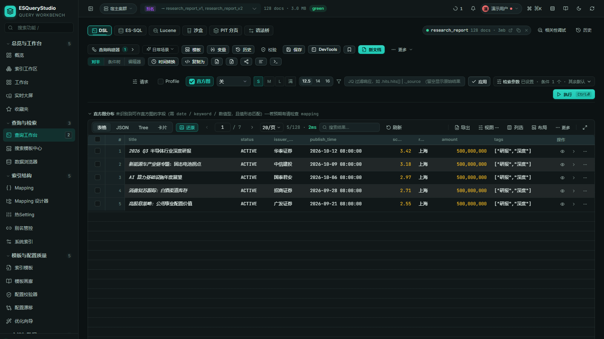

POST /mcp
标准 HTTP JSON-RPC，多集群与配额治理；ADMIN 控制系统管理工具。
Authorization: Bearer esq_mcp_…
SPRING BOOT STARTER · ELASTICSEARCH 7.6+
为 Spring Boot 而生的 Elasticsearch 查询工作台。DSL、SQL、Lucene、沙盒、PIT 与语法桥共享同一份查询上下文；Mapping、analyzer 与版本感知参与补全、lint 和执行前检查。
合成数据演示 · 不连接真实 Elasticsearch · Apache-2.0
{
"query": {
"bool": {
"must": [
{ "term": { "status": "paid" } },
{ "range": { "amount": { "gte": 100 } } }
]
}
},
"sort": [{ "paid_at": "desc" }],
"size": 20
}01 / THE DESK
查询工作台是主角。条件树与原始 JSON 双向同步，切换 SQL、Lucene 或 PIT 时，结果、直方图、历史与草稿都不离开现场。

02 / MCP NATIVE
同一组工具契约，三种 transport 对齐；key 按登录人与角色签发，连接级 read/write，调用留档到 IP、UA 与 requestId。
标准 HTTP JSON-RPC，多集群与配额治理；ADMIN 控制系统管理工具。
Authorization: Bearer esq_mcp_…
页面内 AI / Agent 零端口调用；写工具默认关闭，边界如实展示。
await ESQueryStudioMCP.callTool(…)
本机 Agent 直连 ES，无 Spring Boot；CLI 识别并写入主流客户端配置。
esquerystudio-mcp --config mcp.json
03 / HOST-FIRST
共享宿主登录态、路由、菜单与权限；认证、连接目录、审计与品牌均可通过 SPI 接管。53 个页面收敛成 11 个功能包，按需上甲板。
宿主集成清单@Bean
ConsoleHostIntegration esQueryStudioHostIntegration() {
return new ConsoleHostIntegration() {
public String id() { return "acme"; }
public String displayName() { return "Acme Search"; }
public List<String> preferredPacks() {
return List.of("search", "index", "mcp", "devtools");
}
};
}